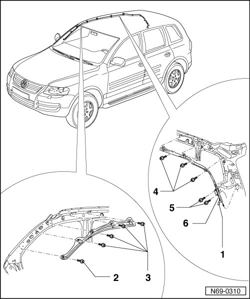

Driver and Passenger Side Curtain Airbags
Driver and Passenger Side Curtain Airbags
• Removal and installation is described for the right-hand side of the vehicle. Removal and installation for the left-hand side is performed in the same manner.
Removing
CAUTION!
Observe safety precautions for working on airbags --> [ Airbag Safety Precautions ] Technician Safety Information.
- Disconnect batteries.
- Remove upper A-pillar trim --> [ Upper A-Pillar Trim ] Upper A-Pillar Trim.
- Remove B-pillar trim --> [ B-Pillar Trim ] B-Pillar Trim.
- Remove C-pillar trim --> [ C-Pillar Trim ] C-Pillar Trim.
- Remove D-pillar trim --> [ D-Pillar Trim ] D-Pillar Trim.
- Remove roof end strip --> [ Roof End Strip ] Roof End Strip
- Remove visors --> [ Sun Visor ] Service and Repair.
- Remove grab handles (roof) --> [ Roof Grab Handles ] Service and Repair.
- Remove headliner console--> [ Headliner Console ] Headliner Console.
- Remove headliner --> [ Headliner ] Headliner.
CAUTION!
Electrostatic discharges can lead to an unintended deployment of the airbag. Therefore the technician must discharge static electricity from the body before separating the ignition and ground wiring. This is done e.g. by briefly touching the body or the door striker or pin.
- Disconnect connector - 1 -.
- Remove the two bolts - 5 -.
- Remove the bolts - 2 -, - 3 - and - 4 -
- Remove securing clips in vicinity of bolts from body.
• Securing clips must not be damaged or opened during removal.
- Pull gas generator - 6 - through pillar trim bracket.

Installing
- Perform the steps used for removal in reverse order.
• The bolts are microencapsulated and must therefore be replaced after every removal.
• Before installing the new bolts, the threads of the corresponding nuts must be cleaned.
• Start by clipping and bolting curtain airbag at A-pillar and work toward D-pillar.
• The torque setting for bolts - 2 -, - 3 -, - 4 - and - 5 - is 3.5 Nm.
- Switch the ignition on.
CAUTION!
Make sure that no persons are in the vehicle.
- Connect battery ground (GND) strap --> Electrical Equipment 27 Removal and Installation